◾️Lv1000以上で受託可能
◾️経験値約990億 ◾️目安30分~60分 ◾️スキルポイント1500
◾️経験値約990億 ◾️目安30分~60分 ◾️スキルポイント1500
1. 探検隊「ガレリオン」序幕
| 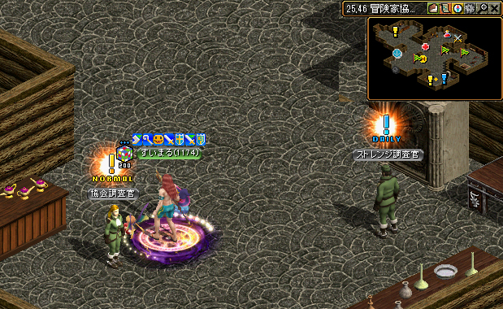 |
ガイド1001~のクエスト/探検隊「ガレリオン」序幕 へ飛ぶ。 【協会調査官】と話してＵＰ。 【協会調査官】と話してＵＰ。 |
|---|---|
| 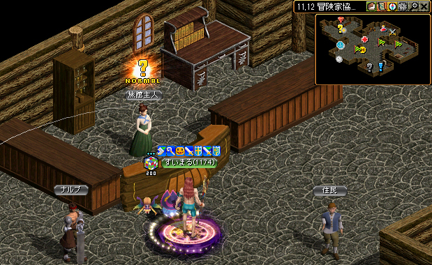 |
そのまま左上に進み、カウンターにいる【旅館主人】と話しＵＰ。 |
| 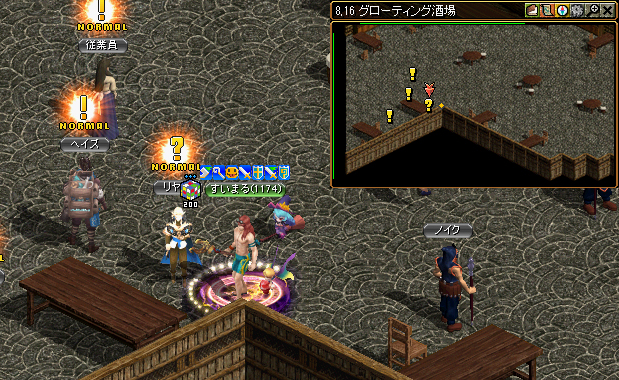 |
ガイド1201~のクエスト/ガレリオン－ヤティカヌの茂み編へ飛ぶ。 グローティング酒場の【リヤン】と話してＵＰ。 リヤンの前を記憶１ リヤンの前を記憶１ |
| 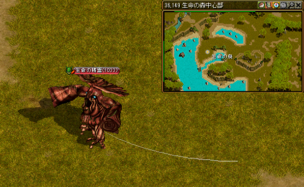 |
ガイド951~狩場/神獣の野原へ飛ぶ。 「生命の森中心部」に行き、生命の精霊を倒す。 生命の森らへんを記憶２ |
| 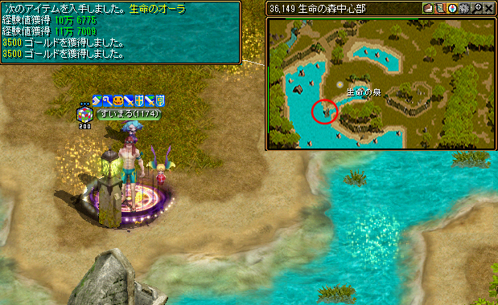 |
生命のオーラがでたら【30.164】の柱を触ってUP。 |
| 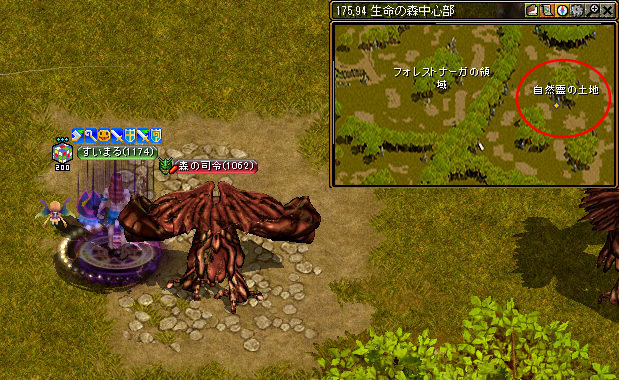 |
ガイド1001~狩場/生命の森中心部へ飛ぶ。 「自然霊の土地」に行き、【森の司令】を倒す。 |
| 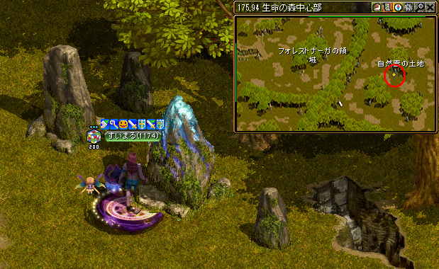 |
生命のオーラがでたら【175.94】の岩を触ってUP。 記憶２で生命の森へ |
| 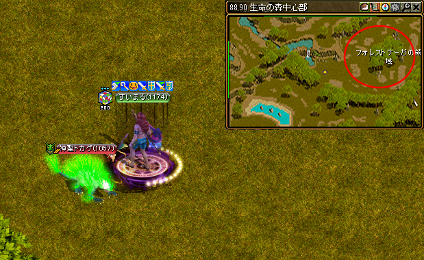 |
右上の、【フォレストナーガの領域】へ行く。 「自然霊の土地」に行き、【神聖トカゲ】を倒す。 |
| 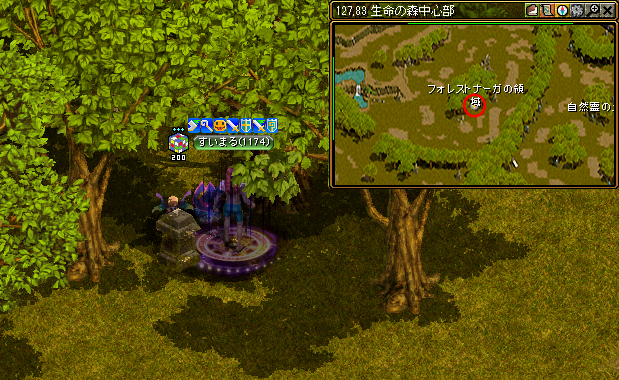 |
生命のオーラがでたら【127.83】の柱を触ってUP。 |
| 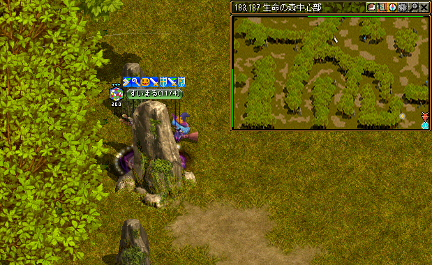 |
ガイド1001~狩場/生命の森中心部へ飛ぶ。 【183.187】の岩を触ってUP。 |
| 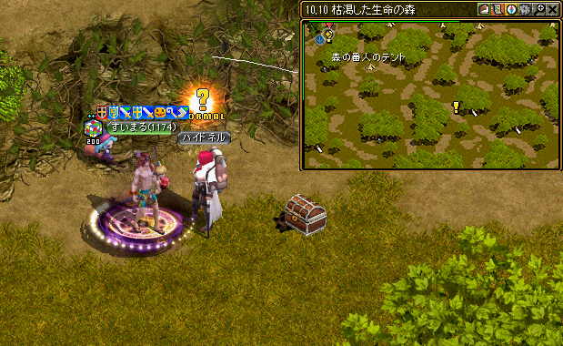 |
すぐ下にあるポータルから【枯渇した生命の森】へ。 【ハイドネル】と話してＵＰ。 記憶１でリヤンの前へ |
| 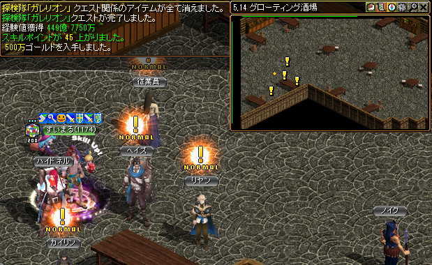 |
経験値が貰えるのでパワキを準備しよう！ 【ハイドネル】と話してＵＰ。 経験値が貰える！ |
2. 海へと続く手がかり
 |
【ヘイズ】と話してＵＰ。 経験値が貰える！ |
|---|---|
| 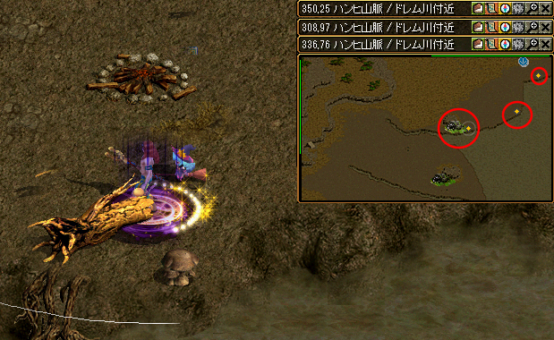 |
街移動で、古都へ飛ぶ ファストポータル 廃墟スバイン要塞へ飛ぶ。  【350.25】 の焚火跡 【308.97】 の木 【336.76】 の木 それぞれクリックしてＵＰ。 【350.25】 の焚火跡 【308.97】 の木 【336.76】 の木 それぞれクリックしてＵＰ。 |
 |
記憶１でリヤンの前へ 【１１１２】と【ヘイズ】と話してＵＰ。 |
| 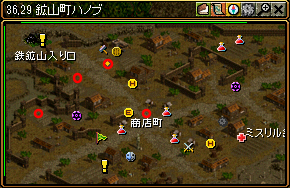 |
街移動で、鉱山町ハノブへ飛ぶ。 【26.36】の鉱員 【37.31】の鉱員 【12.65】のおじいさん 【51.63】の鉱員 おじさん達と話してクエアップ |
 |
記憶１でリヤンの前へ 【ヘイズ】と２回話してＵＰ。 経験値が貰える！ |
3. それぞれの役割
 |
【リヤン】と２回話してＵＰ。 |
|---|---|
| 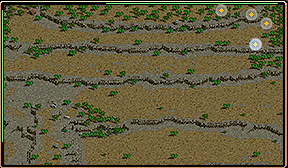 |
ガイドで、タトバ山東部地域へ飛ぶ。 【221.07】の木 【230,10】の木 【232.23】の岩 【228.44】の木 |
| 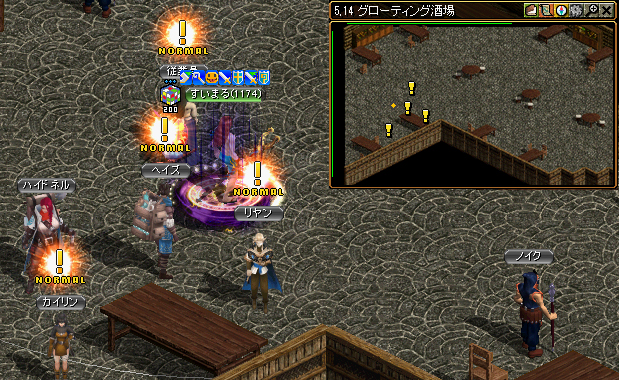 |
記憶１でリヤンの前へ 【リヤン】と２回話してＵＰ。 |
4. まだ認めることは出来ない！
 |
【カイリン】と話してクエスト再開。 ガイドで、タトバ山東部地域へ飛ぶ。 ＭＯＢを３０体狩ってＵＰ。 |
|---|---|
 |
記憶１でリヤンの前へ 【カイリン】と話してＵＰ。 ガイド1051~の狩場生命の森外郭へ飛ぶ。 ＭＯＢを５０体狩ってＵＰ。 |
 |
記憶１でリヤンの前へ 【カイリン】と話してクエスト終了。 経験値・スキルポイント１０００が貰える！ |